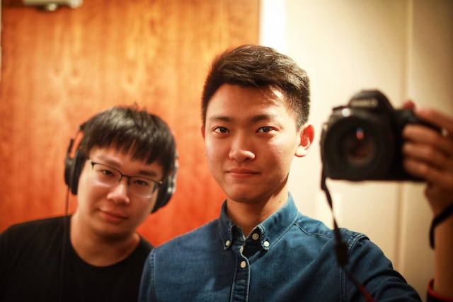

工作
我的工作主线是把企业级 Agent 平台从技术验证推进到生产环境，让它稳定进入同事的日常工作。
Personal frequency · Nanjing
我用代码构建工具，
也用影像理解世界。
我是施文博，现居南京。目前担任算法工程师、公司智能体平台负责人，也持续维护开源工具；曾经花很多时间在电影、摄影和手工模型上。这里放一些我做过的、正在做的，以及塑造过我的事情。
代码、影像、城市与记忆，共同构成我的个人频率。你可以沿着四个信号，选择一种方式认识我。

PHOTO / 摄影01 / Right now
技术是工作，也是手艺。
电影和摄影，则是我理解世界的另一种方式。
我的工作主线是把企业级 Agent 平台从技术验证推进到生产环境，让它稳定进入同事的日常工作。
我持续维护 DeepSeek Harness 生态的 7 个插件与工具，覆盖远程工作区、飞书、技能管理和 AI Coding。它们都来自真实使用中的问题。
我仍保留对电影、摄影和创作的兴趣。本科辅修电影学，也画过画、做过模型；这些经历让我不只从工程角度看待工具与人。
02 / Things I make
每一个东西背后都有一个真实问题。这里只挑几件愿意展开聊的。
我目前负责公司智能体平台，并从零发起、主导其建设，参与验证、架构、研发和生产交付。平台现在服务 4000+ 同事；更重要的是，它已经进入同事的日常工作。
打开档案 ↗我把远程工作里真正会用到的本地缓存、冲突安全同步和远程终端，收进一个工作区。少切几次窗口，就多一点连续思考的时间。
打开档案 ↗让多个 Agent 从不同角度讨论一篇论文，而不是只给一段摘要。它来自我对「怎样把复杂知识讲明白」这件事的兴趣。
打开档案 ↗将可公开的平台实践整理成持续补充的工程笔记，聚焦问题、约束与解决方式。
打开档案 ↗03 / Places that shaped me
城市不只是简历上的地点，它们也改变了我看世界的方式。点击切换。
2017 — 2021 · CANADA
本科期间，我在多伦多大学主修通讯、文化与信息技术，辅修计算机科学和电影学，同时在 Sheridan College 学习 New Media（新媒体）。这四条学习线索，也让我同时接触技术、传媒与影像。那几年，我也持续参与社团、摄影和视频制作，并在陌生的城市里慢慢建立自己的节奏。
「代码和电影，从那时开始一起成为我理解世界的方式。」
04 / From the archive
在写平台代码之前，我就已经喜欢亲手做东西。这些绘画、手作和照片，记录了我学习观察与表达的过程。点击可以放大。
05 / A little more about me
我喜欢有秩序的系统，也欣赏电影里的含混与留白。做工具时，我希望它可靠、清楚；生活里的我，则更享受观察、记录，以及和不同背景的人聊天。
施文博，也可以叫我 Wilson。
算法工程师 · 公司智能体平台负责人 · 南京。
中文是母语，英语可以作为工作语言。
加拿大与澳大利亚学习生活，海外约十年。
电影、摄影、绘画，以及动手做小东西。
诚实说明自己在项目中的角色，也如实标注旧档案。